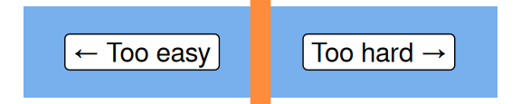

n1 <- 7:9The purrr package in R
R
intermediate
Session materials
- all materials
- slides
html / pdf
Previous attendees have said…
- 2 previous attendees have left feedback
- 100% would recommend this session to a colleague
- 100% said that this session was pitched correctly

Three random comments from previous attendees
- .
- The session was a useful introduction to purrr, though I struggled a bit to identify how I might use it in my daily work
Welcome
- this session is for 🌶🌶 intermediate users
- you’ll need R + Rstudio / Posit Workbench / posit.cloud to follow along
Session outline
- a digression about Linnaeus
- functionals
- base-R functional programming
mapandwalkmap2andpmap- niceties and add-ons
A digression about Linnaeus
- used an existing system of binomial classification
- Homo sapiens
- Homo = generic name, which applies to similar species
- sapiens = specific name, for that species and that species only
- Pan troglodytes and Pan paniscus = two similar species in a genus
- Elephas maximus and Loxodonta africana = two similar species in different genera
Functionals
Here are some numbers:
Let’s find their average. We’d usually do this by passing those numbers to a function:
mean(n1)[1] 8But in R, interestingly, we can also do this the other way round by passing a function name:
my_num_f <- function(funct = mean) funct(n1)
my_num_f(mean)[1] 8my_num_f(sum)[1] 24We’d describe this as a functional. It’s fun, but a bit messy and annoying (e.g. how to change the numbers you’re averaging??).
Functional programming in base R
Say we’ve got a function we want to apply:
round_root <- function(n) round(n ^ 0.5, 1)There are several ways of applying functions to stuff in base R. + we could use a loop: that’s another session + we could just exploit the vectorised nature of most functions in R
round_root(n1)[1] 2.6 2.8 3.0- or we could use some of the
applyfamily of functions, likelapplyandsapply:
lapply(n1, round_root) # returns a list[[1]]
[1] 2.6
[[2]]
[1] 2.8
[[3]]
[1] 3sapply(n1, round_root) # simplifies that list to a vector[1] 2.6 2.8 3.0There’s no real reason to use these functions when things are this simple, but when our applications become more complicated…
n2 <- 11:13
lapply(list(n1, n2), round_root)[[1]]
[1] 2.6 2.8 3.0
[[2]]
[1] 3.3 3.5 3.6sapply(list(n1, n2), round_root) # oddball output [,1] [,2]
[1,] 2.6 3.3
[2,] 2.8 3.5
[3,] 3.0 3.6lapply(list(n1, n2[1:2]), round_root) # quirky[[1]]
[1] 2.6 2.8 3.0
[[2]]
[1] 3.3 3.5purrr
- purrr is a functional programming toolkit
- main advantage = consistency
- very useful cheatsheet
map
map is our purrr type specimen
library(purrr)
map(n1, round_root)[[1]]
[1] 2.6
[[2]]
[1] 2.8
[[3]]
[1] 3Pleasingly, map will handle all kinds of odd inputs without fuss:
map(c(n1, n2), round_root)[[1]]
[1] 2.6
[[2]]
[1] 2.8
[[3]]
[1] 3
[[4]]
[1] 3.3
[[5]]
[1] 3.5
[[6]]
[1] 3.6map(dplyr::tibble(n1 = n1, n2 = n2), round_root)$n1
[1] 2.6 2.8 3.0
$n2
[1] 3.3 3.5 3.6map(rbind(n1, n2), round_root) [[1]]
[1] 2.6
[[2]]
[1] 3.3
[[3]]
[1] 2.8
[[4]]
[1] 3.5
[[5]]
[1] 3
[[6]]
[1] 3.6map will always return a list - that’s because, no matter what the output, you can always cram it into a list. If you want different output, you can have it. You just need to find the right species:
map_vec(n1, round_root)[1] 2.6 2.8 3.0try(map_int(n1, round_root)) # surly and strictError in map_int(n1, round_root) : ℹ In index: 1.
Caused by error:
! Can't coerce from a number to an integer.round_root_int <- function(n) as.integer(n ^ 0.5)
map_int(n1, round_root_int) [1] 2 2 3round_root_lgl <- function(n) as.integer(n ^ 0.5) %% 2 == 0
map_lgl(n1, round_root_lgl)[1] TRUE TRUE FALSEanonymous functions
If you’re comfortable with the new anonymous function syntax, you can build an anonymous function in place:
map_lgl(1:4, \(x) x %% 2 == 0)[1] FALSE TRUE FALSE TRUEwalk
walk is intended for code where the side-effect is the point: graphs, pipes, and Rmarkdown especially. Otherwise, it’s as map:
walk(n1, round_root) # wtf?
round_root_print <- function(n) print(n ^ 0.5)
walk(n1, round_root_print) [1] 2.645751
[1] 2.828427
[1] 3round_root_cat <- function(n) cat(n ^ 0.5, " \n")
walk(n1, round_root_cat)2.645751
2.828427
3 map2
map2 is for 2-argument functions:
map2_int(n1, n2, `+`) # the best terrible way of adding I know[1] 18 20 22round_root_places <- function(n, dp = 1) round(n ^ 0.5, dp)
round_root_places(n1, 0)[1] 3 3 3map2(n1, 0, round_root_places)[[1]]
[1] 3
[[2]]
[1] 3
[[3]]
[1] 3Beware of recycling rules
You’ll be unable to use map2 if your inputs are different lengths:
try(map2(1:3, 0:3, round_root_places))Error in map2(1:3, 0:3, round_root_places) :
Can't recycle `.x` (size 3) to match `.y` (size 4).This makes expand.grid valuable if you’re looking to try out all the combinations of two vectors, for example.
dat <- expand.grid(nums = 1:3, dplaces = 0:3)
map2(dat$nums, dat$dplaces, round_root_places)[[1]]
[1] 1
[[2]]
[1] 1
[[3]]
[1] 2
[[4]]
[1] 1
[[5]]
[1] 1.4
[[6]]
[1] 1.7
[[7]]
[1] 1
[[8]]
[1] 1.41
[[9]]
[1] 1.73
[[10]]
[1] 1
[[11]]
[1] 1.414
[[12]]
[1] 1.732Or (probably more usefully) this could be done inside dplyr::mutate to add to a tibble:
expand.grid(nums = n1, dplaces = 0:3) |>
dplyr::as_tibble() |>
dplyr::mutate(rr = map2_vec(nums, dplaces, round_root_places)) |>
knitr::kable()| nums | dplaces | rr |
|---|---|---|
| 7 | 0 | 3.000 |
| 8 | 0 | 3.000 |
| 9 | 0 | 3.000 |
| 7 | 1 | 2.600 |
| 8 | 1 | 2.800 |
| 9 | 1 | 3.000 |
| 7 | 2 | 2.650 |
| 8 | 2 | 2.830 |
| 9 | 2 | 3.000 |
| 7 | 3 | 2.646 |
| 8 | 3 | 2.828 |
| 9 | 3 | 3.000 |
pmap
pmap is for n argument functions.
round_roots_places <- function(n, root = 2, places = 1) round(n ^ 1/root, places)
round_roots_places(n1, root = 4, places = 2) # use named arguments to avoid misery[1] 1.75 2.00 2.25pmap(list(n = n1, root = 4, places = 2), round_roots_places)[[1]]
[1] 1.75
[[2]]
[1] 2
[[3]]
[1] 2.25Niceties and addons
imap allows you to work with indicies, and list_c converts simple lists back to vectors:
imap(list("a", "b", "c"), \(x, y) paste0(y, ": ", x)) |> # index map where y is the name or index
list_c()[1] "1: a" "2: b" "3: c"If your function returns a tibble, you can use list_rbind or list_cbind to row- or column-bind the results into a tibble:
map(n1, \(x) dplyr::tibble("Val" = x, "sq_val" = x^2)) |>
list_rbind() |>
knitr::kable()| Val | sq_val |
|---|---|
| 7 | 49 |
| 8 | 64 |
| 9 | 81 |